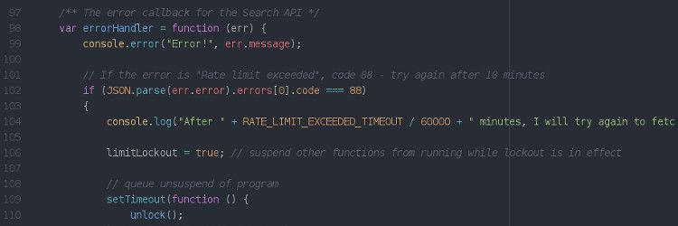
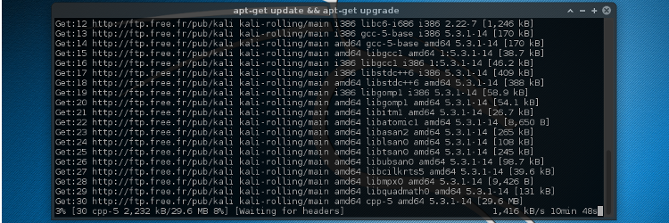
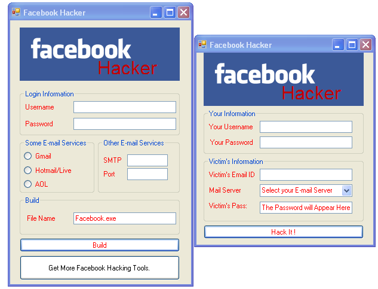

Piratage: 5 mythes courants à bannir
Merci aux médias, les mondes du hack et du piratage sont maintenant entourés d’amalgames et de mythes complètement faux, aujourd’hui je vous invite à faire un petit tour d’horizon afin de remettre les pendules à l’heure.
Hacker est synonyme de pirate informatique
Non, non et non ! C’est ici un des mythes qui m’irritent le plus et c’est pour ça que je commence par lui.
Pour la peine, allons faire un tour et regardons ce que Saint Wikipedia nous dit la dessus :
« Hacker » est un mot d’origine anglo-américaine. Dans son sens général, un hacker est quelqu’un qui aime comprendre le fonctionnement d’un mécanisme, afin de pouvoir le bidouiller pour le détourner de son fonctionnement originel.
Vous voyez la différence ? Les hackers sont des passionnés qui inventent et innovent pour le plaisir, c’est leur passion.
Le fonctionnement même d’internet par exemple, a été mis en place par des hackers. 2/3 des serveurs dans le monde utilisent Apache, créé par des passionnés et mis à disposition gratuitement. GNU ? Linux ? Idem
Le Homebrew Computer Club, cela vous dit quelque chose ? C’était un club d’informatique dans les années 70-80 où des passionnés d’informatique s’y retrouvaient régulièrement pour parler bidouillage, autrement dit, un club de hackers. Toujours rien ? Dans ces membres deux noms devraient vous dire quelques chose, Steve Jobs et Steve Wozniak, fondateurs d’Apple Inc. (Bon eux ils ont quand même pas mal joué avec leurs blueboxs…)
Je vous invite également à lire cet article disponible sur rue89 expliquant comment les hackers indépendants œuvrent chaque jour pour votre sécurité. Tout comme le font les red et blue teams, les équipes d’experts en sécurité de chez Apple et Microsoft et qui ont très certainement leurs équivalents dans d’autres grosses entreprises.
L’amalgame hacker & pirate est malheureusement très fortement ancré dans notre pays, il n’y a qu’à lire la définition obsolète / erronée de hacker sur le larousse pour s’en rendre compte…
Pour finir je dirais que le pirate est un hacker (la plupart du temps) mais le hacker n’est pas forcement un pirate, tout comme les escrocs sont des êtres humains, mais les êtres humains ne sont pas forcement des escrocs.
L’écran d’un pirate
- Ça c’est un écran de veille.

- Ça c’est du javascript.

- Ça c’est une mise à jour de Linux en ligne de commande.
- Ça, c’est un film.
Dans la vraie vie les écrans sont beaucoup moins intéressants visuellement, vous pouvez comparer ça avec les éclaboussures de sang, qui sont beaucoup plus spectaculaires au cinéma que dans la vraie vie.
Si si, vous savez, les films où au lieu d’avoir 4l de sang les humains en ont une 30ene si on s’en tient à la quantité perdue sans même mourir ! Et bien c’est exactement la même chose ici.
Donc non, lors d’un piratage il n’y a pas de millions de lignes de code parcourant l’écran ni même d’effet 3D qui partent dans tous les sens.
Si vous voulez avoir un aperçu intéressant et collant au plus avec la réalité (je parle de la technique), je vous conseille vivement l’excellente série Mr.Robot. vous pourrez alors apercevoir à quoi ressemble un écran lors d’un piratage.
Un pirate ça ressemble à ça:
Pour ne pas se faire repérer, les pirates mettent des cagoules, évidemment.
Car porter un chapeau, un masque et des lunettes de soleil tout en étant dans un écran de fumée, c’est beaucoup plus confortable.
En plus de la cagoule, les plus expérimentés ajoutent aussi une capuche !
Sérieusement, tous les jours en voyant les faits divers on peut entendre des phrases comme celle-ci :
Oh ! Je ne l’aurai pas cru comme ça, on ne dirait pas !
C’est pareil ici, des gens comme vous et moi se font arrêter pour cybercriminalité.
Vous avez un doute ? Sortez votre moteur de recherche préféré et allez regarder à quoi ressemblent :
- Adrian Lamo
- Aleksandr Panin
- Gary McKinnon
- Hamza Bendelladj
- John Drapper
- Kevin Mitnick
J’aurai pu en citer d’autres mais ça devrait être suffisant, vous avez compris le principe.
Il existe des logiciels spéciaux pour le piratage
J’ai beau utiliser les meilleurs crayons je reste incapable de dessiner quelque chose à main levée, c’est le même concept qui s’applique ici.
Vous pouvez avoir les meilleurs outils possibles si vous ne savez pas les utiliser ni comprendre comment ils fonctionnent alors ils ne servent à rien.
J’ajouterai aussi qu’un logiciel est avant tout un outil et que c’est son utilisation qui en fait un outil de piratage ou non. L’exemple parfait est l’utilisation d’outils d’administration à distance à des fins malveillantes.
Exceptions
Une exception cependant, les vrais-faux logiciels de piratage de comptes insérez un site populaire. Vous trouverez ces arnaques sur différents sites répondant à des mots clefs du genre :
- comment pirater un compte facebook gratuitement
- logiciel pour pirater facebook gratuit
Remplacez le mot facebook par ce que vous voulez, twitter, instagram, whatsapp…

Le principe est simple et se présente comme ceci :
- Présenter un logiciel étant capable de voler le mot de passe de vos amis
- Demander la connexion à son compte pour pouvoir choisir la victime
- Récupérer le mot de passe de votre compte
Donc oui, ces outils existent et fonctionnent très bien, sauf qu’ils ne servent pas à récupérer les mots de passe de vos amis mais à envoyer les vôtres au créateur du logiciel, l’apprenti pirate se retrouvant alors piraté.
Je ne suis pas intéressant pour les pirates
Et donc naturellement je ne risque rien. => NON.
- L’appareil en lui même est potentiellement utile pour les pirates afin de servir d’espace de stockage pour des fichiers illégaux, ou alors comme zombie afin de constituer un botnet par exemple.
- Vos données, et même si vous ne pensez pas qu’elles soient utiles pour les pirates, le sont aussi. Sachez que n’importe quelle donnée personnelle a de la valeur, qu’elle soit seule ou accompagnée de celles d’autres personnes. Il est monnaie courante de voir de telles données revendues sur le marché noir.
- Vos adresses emails sont également intéressantes. De nombreuses « entreprises » cherchent à acheter des bases de données afin d’envoyer de la publicité et ainsi, démarcher de nouveaux clients potentiels.
Vous les avez déjà sûrement croisé via leurs campagnes type viagra pas cher, médicaments révolutionnaires etc… Non les emails n’arrivent pas dans vos boites mails tout seuls.
- NON, vous n’avez pas un arrière cousin du père de l’oncle de votre cousine dans un pays éloigné qui vient de décéder.
- NON vous n’allez pas hériter d’une somme d’argent.
- NON vous n’avez pas besoin d’envoyer de l’argent pour les frais d’huissier.
Par pitié, ne me dites pas que vous pensez qu’un huissier ou un avocat va vous demander de régler ces prestations avec des cartes prépayées achetées au tabac en bas de chez vous.
Bref, je commence à m’éloigner du sujet initial, reprenons.
Qui voudrait avoir accès au compte Facebook d’une personne banale comme moi ?
Exemple de piratage devenue souvent monnaie courante sur cette plateforme :
- La personne se fait voler son compte
- Le pirate contacte les amis et la famille en prétextant un problème X et demande de l’argent, souvent un virement d’une somme modique ou une carte prépayée de Y€
- Les contacts tombent dans le panneau, pensant aider un ami dans le besoin
Dans ce cas ce n’est pas vous qui êtes intéressant mais les liens que vous pouvez avoir avec vos contacts et la confiance qu’ils ont en vous.